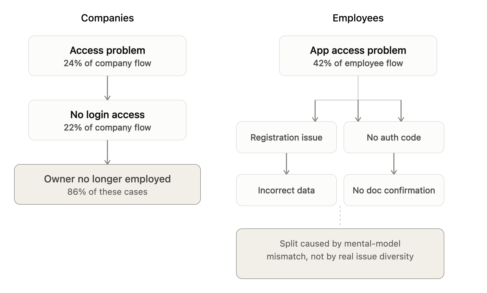
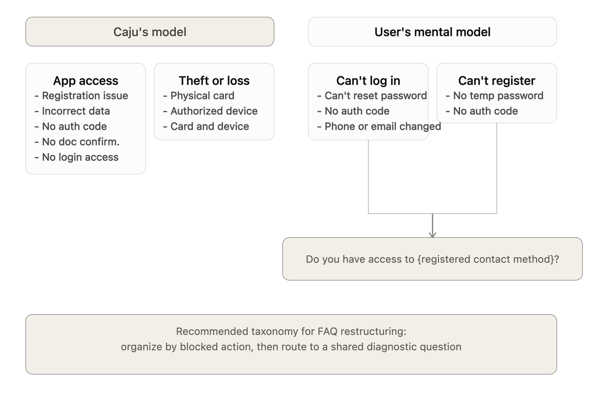

Case 03 · Product discovery · Caju
When support reveals product gaps
A self-initiated discovery that turned chatbot conversations into product insights
While accessing Caju's website for another project, I noticed that the site chatbot offered no self-service flows for employees or companies, despite recurring access-related complaints in NPS responses and sales conversations.
I brought the opportunity to my leadership and proposed a discovery to understand whether the chatbot could become a useful support channel.
Over Q1 2024, I designed and ran a three-phase discovery combining qualitative analysis, quantitative validation, and a live self-service pilot.
My role
- Research plan and hypotheses
- Qualitative analysis of chatbot and CX inputs
- NPS analysis and quantitative validation
- Information architecture and decision-tree design
- Conversation flows and UX writing
- Pilot analysis and synthesis
- Recommendations for chatbot, access, and support teams
I partnered with the Product Manager responsible for the website, who implemented the pilot based on the experience and decision tree I designed.
Find the dominant problem
I analyzed open-ended chatbot inputs from January 18–28, 2024, looking for recurring questions that weren't represented in the existing decision tree. I also partnered with CX to understand the access issues reaching human support.
Access emerged as the dominant theme.
Quantitative analysis from January 29–February 19 confirmed that access-related issues represented more than 50% of reported problems for both employees and companies.
That gave us a focused hypothesis to test: could self-service help users recover access without human intervention?
Test the smallest useful experience
Rather than building a full AI chatbot, I designed a decision-tree pilot focused on access recovery.
The experience separated users into Companies and Employees, reflecting their different account structures and access logic.
The pilot ran from March 25 to April 18, 2024.
2,943
Chatbot entries
57%
Employee Help
18%
Company/HR Help
46%
Abandoned before completion
The volume validated demand for the channel, but the flow exposed a deeper problem: Caju and users were organizing access problems differently.

Find the mental-model mismatch
I redesigned the architecture around blocked actions rather than internal problem categories, creating a framework that also informed the broader FAQ and access experience.

Find the product problem behind the support request
The pilot surfaced a particularly important pattern among company users:
86%
of users encountering a specific access issue reported that the person who owned the company's login credentials no longer worked there.
This exposed an account ownership and offboarding problem that CX could see through support tickets but Product did not have the same aggregated visibility into.
I translated these findings into recommendations for the chatbot, FAQ, support infrastructure, and teams responsible for access.
The FAQ later gained a dedicated team, and the access-problem architecture from the discovery became a foundation for restructuring that experience. Caju also subsequently expanded AI expertise across Sales, Support, and Design.
Detect an unexpected signal
I kept the pilot live beyond the initial analysis window.
An unusual spike in conversations around a specific access issue appeared roughly two days before CX reported the issue through the cross-functional Slack channel.
The sample wasn't sufficient to establish a monitoring system, but it suggested that conversational data could also reveal emerging product problems.
Impact
2,943
Chatbot entries during four weeks
>50%
of reported issues were access-related across both user segments
57% / 18%
Employee vs. Company/HR flow traffic
46%
Flow abandonment, identifying an optimization opportunity
86%
of users in one company-access issue identified former employees retaining account ownership
~2 days
Between an unusual chatbot activity spike and the corresponding CX report
What changed
The discovery surfaced gaps in access, account ownership, information architecture, FAQ structure, and support operations.
The findings became one input into subsequent decisions across chatbot, FAQ, support, and access teams.
The project showed how conversational data can connect user language, behavior, support signals, and product decisions — expanding the role of Content Design from conversation flows into product discovery.
Case 03 · Discovery de produto · Caju
Quando tickets de suporte revelam gaps de produto
Uma discovery que transformou conversas do chatbot em insights de produto
Enquanto acessava o site da Caju para outro projeto, percebi que o chatbot não oferecia nenhum fluxo de autoatendimento para pessoas colaboradoras ou empresas, apesar de reclamações recorrentes sobre problemas de acesso aparecerem nas respostas de NPS e nas conversas de vendas.
Levei a oportunidade para a liderança e propus uma discovery para entender se o chatbot poderia se tornar um canal de suporte realmente útil.
Ao longo do primeiro trimestre de 2024, planejei e conduzi uma discovery em três fases, combinando análise qualitativa, validação quantitativa e um piloto de autoatendimento em produção.
Meu papel
- Plano de pesquisa e hipóteses
- Análise qualitativa das conversas do chatbot e dos dados de CX
- Análise de NPS e validação quantitativa
- Arquitetura da informação e desenho da árvore de decisão
- Fluxos conversacionais e textos de UX
- Análise e síntese dos resultados do piloto
- Recomendações para chatbot, acesso e times de suporte
Trabalhei em parceria com o Product Manager responsável pelo site, que implementou o piloto a partir da experiência e da árvore de decisão que desenhei.
Encontrando o principal problema
Analisei as entradas abertas do chatbot entre 18 e 28 de janeiro de 2024, buscando perguntas recorrentes que não estavam representadas na árvore de decisão existente. Também trabalhei com o time de CX para entender quais problemas de acesso chegavam ao suporte humano.
Acesso apareceu como o principal tema.
A análise quantitativa realizada entre 29 de janeiro e 19 de fevereiro confirmou que problemas relacionados a acesso representavam mais de 50% dos problemas reportados, tanto entre pessoas colaboradoras quanto entre empresas.
Isso nos deu uma hipótese objetiva para testar: o autoatendimento poderia ajudar as pessoas a recuperar o acesso sem precisar de intervenção humana?
Testando a menor experiência útil
Em vez de construir um chatbot completo com IA, desenhei um piloto baseado em uma árvore de decisão, focado na recuperação de acesso.
A experiência separava as pessoas entre Empresas e Colaboradores, refletindo as diferentes estruturas de conta e regras de acesso de cada público.
O piloto ficou no ar de 25 de março a 18 de abril de 2024.
2.943
Entradas no chatbot
57%
Fluxo de ajuda para colaboradores
18%
Fluxo de ajuda para empresas/RH
46%
Abandonaram o fluxo antes de concluí-lo
O volume confirmou a demanda pelo canal, mas o fluxo revelou um problema mais profundo: a Caju e as pessoas usuárias estavam organizando os problemas de acesso de formas diferentes.
Identificando o desencontro de modelos mentais
Redesenhei a arquitetura a partir das ações que estavam bloqueadas, em vez de partir das categorias internas dos problemas.
O resultado foi um framework que também passou a orientar a estrutura da FAQ e da experiência de acesso.
Encontrando o problema de produto por trás da solicitação de suporte
O piloto revelou um padrão especialmente importante entre usuários de empresas:
86%
das pessoas que encontraram um problema específico de acesso relataram que a pessoa responsável pelas credenciais de login da empresa não trabalhava mais lá.
Isso revelou um problema de gestão de acesso e o processo de desligamento de colaboradores. Apesar do time de CX conseguir identificar esse problema por meio dos chamados de suporte, o time de Produto não tinha essa mesma visibilidade.
Transformei esses achados em recomendações para o chatbot, FAQ, a estrutura de suporte e os times responsáveis pela gestão de acesso.
Posteriormente, a FAQ passou a contar com um time dedicado, e a arquitetura de problemas de acesso criada durante a discovery serviu como base para reestruturar essa experiência.
A Caju também ampliou posteriormente a atuação de especialistas em IA entre os times de Vendas, Suporte e Design.
Comportamentos não esperados
Mantive o piloto no ar além do período inicial de análise.
Um aumento incomum nas conversas sobre um problema específico de acesso apareceu aproximadamente dois dias antes de o time de CX reportar o mesmo problema no canal de Slack usado pela equipe para compartilhar sinais entre áreas.
A amostra não era suficiente para estabelecer um sistema de monitoramento, mas indicou que dados conversacionais também poderiam ajudar a identificar problemas emergentes de produto.
Impacto
2.943
Entradas no chatbot durante quatro semanas
>50%
Dos problemas reportados eram relacionados a acesso nos dois públicos
57% / 18%
Tráfego nos fluxos de Colaboradores vs. Empresas/RH
46%
Abandono do fluxo, identificando uma oportunidade de otimização
86%
Das empresas com problemas de acesso identificaram ex-colaboradores como responsáveis pela login
~2 dias
Intervalo entre o aumento incomum na atividade do chatbot e o reporte correspondente pelo time de CX
O que mudou
O discovery revelou gaps em acesso, propriedade de contas, arquitetura da informação, estrutura da FAQ e operações de suporte.
Os achados passaram a fazer parte das decisões seguintes envolvendo chatbot, FAQ, suporte e acesso.
Este projeto mostrou como dados conversacionais podem conectar linguagem das pessoas usuárias, comportamento, suporte e decisões de produto — ampliando o papel de Content Design de fluxos conversacionais para também contribuir com discovery de produto.